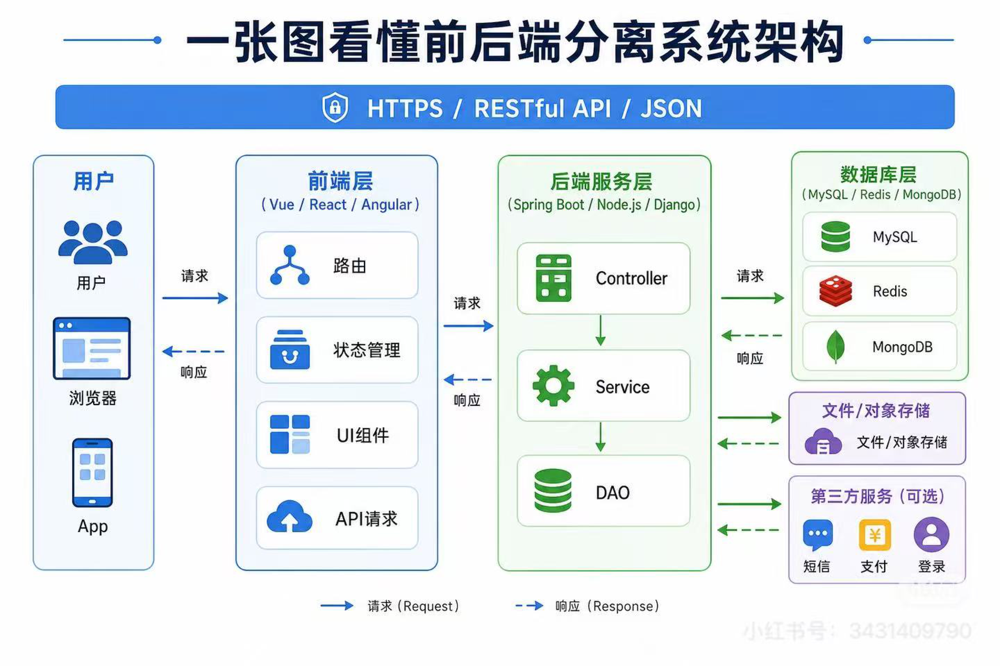

🖼️ 图片识别
上传图片，调用后端 OCR 引擎（Unlimited-OCR）识别文本
点击选择或拖拽图片到此处
支持 JPG / PNG / BMP / WEBP
🗂️ 识别历史
🎬 视频抽帧识别
按时间间隔抽帧识别：Dots AI 引擎 = 浏览器抽帧直连（免后端，建议间隔≥5 秒）；本地 OCR 后端 = PaddleOCR 中央数字
点击选择视频
未选择视频
🗄️ 数据审核
来自后端数据库（MySQL · ocr_competition）的审核队列与可信知识库
点击「刷新数据」从后端读取审核统计与已通过记录。
✍️ 审核台（填写标准结果）
选择记录 → 对照原图修正文本 → 通过后作为「标准结果」存入可信知识库。已审核过的记录可随时重新打开修改或改判（每次提交均需审核令牌）。
- 加载中…
← 左侧点击一条记录开始审核（已审核的也可重新打开修改）
提交需在「关于」页配置审核令牌（REVIEW_TOKEN）。同一记录可反复提交：通过后仍可再改判为拒绝，反之亦然。
📋 已通过记录
暂无已通过记录。
🔬 评测对比
对比 OCR 识别结果与人工标准结果，输出准确率指标与逐行差异
请选择样本后点击「开始对比」。
图例：一致不同标准有/识别缺识别多出
📊 批量评测总览
按引擎聚合所有已审核样本的平均字符准确率
| 引擎 | 样本数 | 平均字符准确率 | 最好 | 最差 |
|---|---|---|---|---|
| 点击下方按钮计算 | ||||
🏗️ 系统架构
一体化智慧储运分拣系统 —— 前后端分离架构

🎨 前端层 （本项目 / 您的职责）
- 前端框架：Vue / React / Angular（本页为原生 HTML/CSS/JS 演示）
- UI 组件：上传组件、结果卡片、状态指示器
- 状态管理：页面状态 + localStorage 历史记录
- 路由：单页应用 Tab 视图切换
- API 调用：fetch 封装，对接后端 RESTful API / JSON
- 请求（Request）/ 响应（Response）处理
⚙️ 后端服务
- 框架：Spring Boot / Node.js / Django
- 分层：Controller → Service → DAO
- 通信：HTTPS / RESTful API / JSON
🗄️ 数据库层
- MySQL（关系数据）、Redis（缓存/状态）、MongoDB（文档）
- 文件/对象存储、日志、消息队列、支付、记录
📘 关于本项目
OCR 识别系统 —— 一体化智慧储运分拣系统的前端部分。
本页面为纯静态前端，可部署到 GitHub Pages 直接访问。
默认以演示模式运行（内置示例数据）；配置后端 API 地址后，可对接真实 OCR 引擎（图片=Unlimited-OCR，视频=PaddleOCR）。
⚙️ 识别引擎
选择 OCR 识别后端：本地 OCR 服务（需对接后端），或小红书 Dots AI 多模态模型（dots3-note-prev，前端直连、免后端）。
🔌 对接后端
在下方设置后端 API 地址：本地网关同源时留空即可；公网（GitHub Pages）访问请填写后端公网地址（如 http://云服务器IP），用于读取审核队列与可信知识库数据。
🔐 审核令牌
填写后端 REVIEW_TOKEN 后才能提交审核（通过 / 拒绝）。仅存本机浏览器。